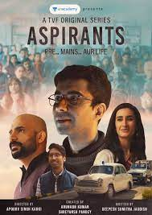
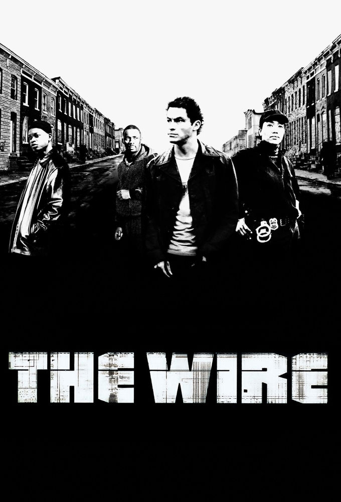
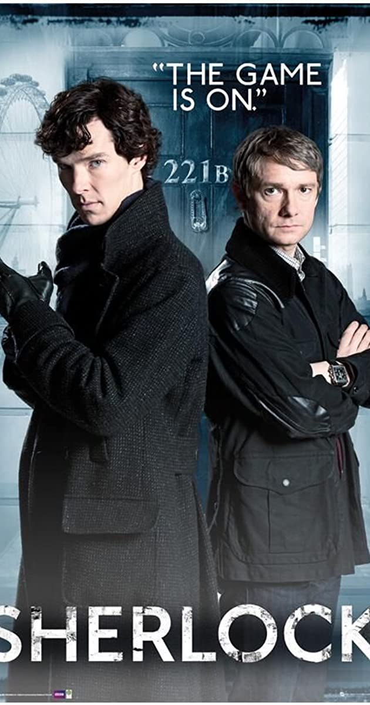
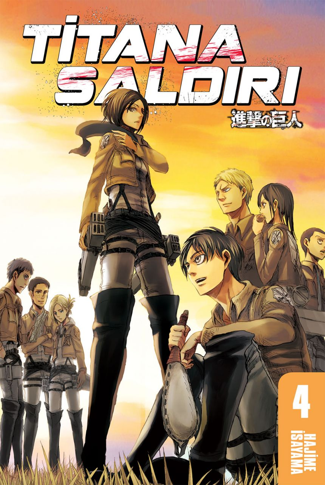

Dövüş Kulübü, Chuck Palahniuk tarafından yazılmış aynı isimli romandan uyarlanan kült filmdir. 1999 yapımı olan film, David Fincher tarafından yönetilmiştir ve başrollerde
Brad Pitt, Edward Norton ve Helena Bonham Carter rol almıştır. Müziklerini Dust Brothers yapmıştır.

Aspirants, Arunabh Kumar tarafından yaratılan The Viral Fever (TVF) tarafından hazırlanan bir web dizisidir. Deepesh Sumitra Jagdish
tarafından yazılan ve Apoorv Singh Karki tarafından yönetilen filmde
Naveen Kasturia, Shivankit Parihar, Abhilash Thapliyal,
Namita Dubey ve Sunny Hinduja yer alıyor. Hikaye, Delhi, Rajnder Nagar'da UPSC sınavına hazırlanan üç arkadaşı, Abhilash, Guri ve SK'yi
(Shwet Ketu) anlatıyor.

The Sopranos, David Chase’in yapımcılığını üstlendiği, 1999-2007 yılları arasında Amerikan HBO televizyonunda yayınlanmış dizidir. Dizinin konusu New Jersey’de bir Amerikan-İtalyan mafya ailesi patronu Tony Soprano’nun
meslek, suç, şiddet, aile, adalet ve dostluk kavramları arasındaki denge kurma mücadelesi üzerine kurulmuştur.

Quentin Tarantino yönetmenliğindeki Roger Avary ile birlikte yazılmış, 1994 yapımı, kült kabul edilen bir filmdir.
Ucuz Roman, En İyi Film dahil 7 dalda Oscar'a aday gösterilmiş ve En İyi Orijinal Senaryo Oscarı'nı almıştır.

The Wire, Baltimore, Maryland'de geçen bir drama dizisidir. ABD'de HBO'da yayınlanan dizinin yapımcısı ve yazarı, eski polis muhabiri David Simon'dır. Yayınına 2 Haziran 2002'de başlanan dizi beş sezonun ardından, 9 Mart 2008'de sona erdi.
Dizinin her bir sezonu Baltimore şehrinin ayrı bir yüzüne odaklanmıştır
12 Öfkeli Adam, Sidney Lumet'in yönettiği 1957 ABD yapımı drama filmidir. Reginald Rose'un aynı adlı oyunundan uyarlanan film bir duruşmada bir jüri üyesinin diğer
on bir jüri üyesini şüphelinin suçsuz olduğu konusunda, makul şüphe temelinde, ikna etme çabaları hakkındadır.

Baba II, ilk filmin yapımından iki sene sonra çekilen film. Mario Puzo ve Francis Ford Coppola'nın ortak yazdığı senaryoyla kurgulanmıştır.
6 Oscar Ödülü kazanmıştır.

Sherlock, Mark Gatiss tarafından televizyon için geliştirilen Sir Arthur Conan Doyle'ın aynı adı taşıyan romanlarına dayalı Britanya televizyon dizisi. Dizinin 90 dakikalık ilk bölümü 25 Temmuz 2010 günü
BBC One televizyon kanalında, "Mini-Dizi" olarak yayımlanmaya Mayıs ayında başladı
Baba, Mario Puzo'nun yazdığı aynı adlı romandan uyarlanan, Francis Ford Coppola'nın yönettiği,
Marlon Brando ve Al Pacino'nun başrollerini paylaştığı filmdir.
Filmde ayrıca yardımcı rollerde James Caan, Robert Duvall, Diane Keaton, John Cazale vardır.

Titana Saldırı Hajime Isayama tarafından çizilen bir manga serisidir. Seri Kodansha'nın Bessatsu Shōnen Magazine adlı aylık manga dergisinde 9 Eylül 2009 tarihinde yayınlanmaya
başlamıştır ve Ağustos 2018 itibarıyla 26 cildi çıkmıştır